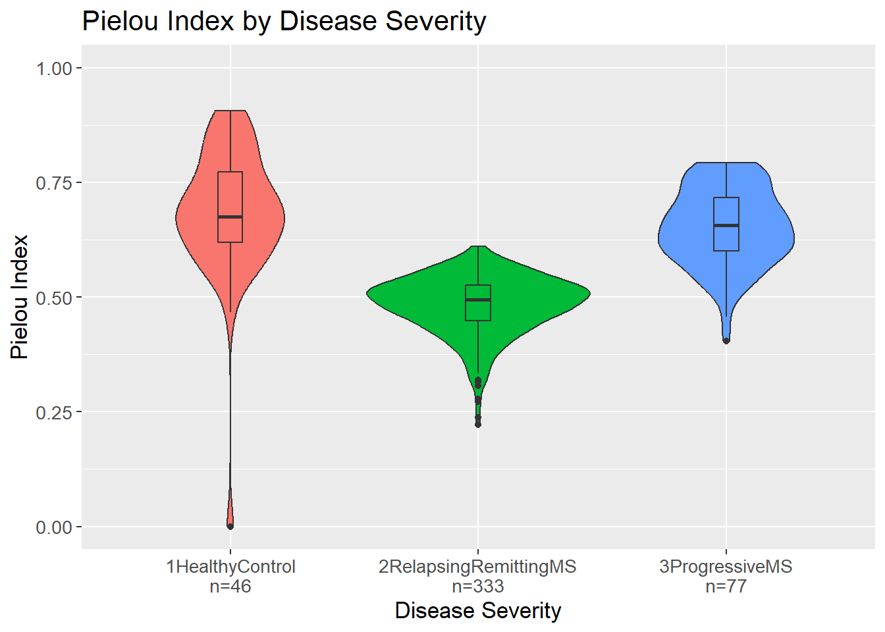

Show the code
set.seed(1337)
library("tidymodels")
tidymodels::tidymodels_prefer()
library("vegan")Set seed and load packages.
set.seed(1337)
library("tidymodels")
tidymodels::tidymodels_prefer()
library("vegan")Load data.
count_matrix <- readr::read_rds("https://github.com/WilliamH-R/BioStatistics/raw/main/data/count_matrix/count_matrix.rds") |>
select(-"NA")
meta <- read.csv(file = "data/metadata.txt") |>
as_tibble() |>
select(Run, chem_administration, ETHNICITY, geo_loc_name,
Host_age, host_body_mass_index, Host_disease, host_phenotype, host_sex) |>
rename(Sample = Run,
Treatment = chem_administration,
Ethnicity = ETHNICITY,
Location = geo_loc_name,
Age = Host_age,
BMI = host_body_mass_index,
Disease_severity = Host_disease,
EDSS = host_phenotype,
Sex = host_sex) |>
mutate(Patient_status = case_when(Disease_severity == "1HealthyControl" ~ "Healthy",
TRUE ~ "MS"),
EDSS = as.factor(EDSS),
EDSS = case_when(is.na(EDSS) & Disease_severity == "1HealthyControl" ~ "-1",
is.na(EDSS) & Disease_severity != "1HealthyControl" ~ "Unknown",
TRUE ~ EDSS),
EDSS = as.factor(EDSS),
Disease_severity = case_when(Disease_severity == "3SecondaryProgressiveMS" ~ "3ProgressiveMS",
Disease_severity == "4PrimaryProgressiveMS" ~ "3ProgressiveMS",
TRUE ~ Disease_severity))Helper function.
pairwise_wilcox_test <- function (data,
combinations,
metric_col_name,
sig_level = 0.05,
bonferroni = TRUE) {
p_value_tibble <- combinations |>
purrr::map(function(combination) {
formula <- stringr::str_c(metric_col_name, " ~ Disease_severity")
richness_filtered <- data |>
filter(Disease_severity %in% combination)
p_value <- wilcox.test(as.formula(formula),
data = richness_filtered) |>
broom::tidy() |>
pull(p.value)
tibble::tibble(Combination = stringr::str_c(combination,
collapse = " vs "),
p_value = p_value) |>
mutate(Significant = case_when(p_value < sig_level ~ "Yes",
TRUE ~ "No"))
}) |> bind_rows()
if (bonferroni) {
n_tests <- p_value_tibble |>
nrow()
p_value_tibble <- p_value_tibble |>
mutate(Significant = case_when(p_value < sig_level/n_tests ~ "Yes",
TRUE ~ "No"))
}
return(p_value_tibble)
}A common first step in microbiome studies is to consider the diversity between groups. Here, Richness, Pielou Index and Shannon’s Diversity Index are calculated stratified by disease severity. Instead of the simply calculating the diversity measures for healthy versus MS patients, the diversity measures are calculated for each combination of healthy, relapsing-remitting MS and progressive MS. This is done to see if the diversity measures can differentiate between the different disease severities.
As mentioned previously, Richness is the number of unique organisms in a sample. Here, the number of unique genera in each sample is calculated and stratified by disease severity. The violin plot shows the distribution of the richness values for each disease severity.
By visual inspection, it would seem that patients with MS, either relapsing-remitting or progressive, have a higher richness compared to healthy controls. Interestingly, a sample seem to have a richness of 0. This could indicate that either something went wrong in the sequencing process or in the subsequent data processing moving from raw sequence reads to a count matrix.
richness <- count_matrix |>
column_to_rownames(var = "Sample") |>
specnumber() |>
as_tibble(rownames = "Sample") |>
rename(Richness = value) |>
left_join(meta,
by = "Sample") |>
group_by(Disease_severity) |>
mutate(count = n()) |>
mutate(Disease_severity_n = stringr::str_c(Disease_severity, "\n", "n=", count)) |>
ungroup()
richness |>
ggplot(aes(x = Disease_severity_n,
y = Richness,
fill = Disease_severity)) +
geom_violin() +
geom_boxplot(width = 0.1) +
labs(title = "Richness by Disease Severity",
x = "Disease Severity",
y = "Richness") +
theme(legend.position = "none") +
theme(text=element_text(size=13))To test if the difference in richness between the groups is statistically significant, a Wilcoxon rank sum test is performed. The test is performed for each combination of the three groups. The p-values are adjusted for multiple testing using Bonferroni correction.
To calculate the p-values, the combinations of the disease severities are found:
combinations <- combn(x = richness |>
distinct(Disease_severity) |>
pull(Disease_severity),
m = 2,
simplify = FALSE)
combinations[[1]]
[1] "2RelapsingRemittingMS" "1HealthyControl"
[[2]]
[1] "2RelapsingRemittingMS" "3ProgressiveMS"
[[3]]
[1] "1HealthyControl" "3ProgressiveMS" The p-values are calculated via the function pairwise_wilcox_test() which can be found in the helper function section in the beginning of the document. For each of the combinations, the input data is subsetted to only include the samples in the combination. Then, a Wilcoxon rank sum test is performed. The significance level is per default 0.05, and the significance level can be adjusted with Bonferroni. As can be seen from the results, there is a significant difference in the richness between the healthy controls and each of the MS groups.
richness |>
pairwise_wilcox_test(combinations = combinations,
metric_col_name = "Richness",
sig_level = 0.05,
bonferroni = TRUE)# A tibble: 3 × 3
Combination p_value Significant
<chr> <dbl> <chr>
1 2RelapsingRemittingMS vs 1HealthyControl 0.00250 Yes
2 2RelapsingRemittingMS vs 3ProgressiveMS 0.994 No
3 1HealthyControl vs 3ProgressiveMS 0.0124 Yes Both the richness and the evenness of a sample is considered when calculating the Shannon Index. If a group has a generally high Shannon Index, it means that the group has a high number of unique genera and that they are evenly distributed. The violin plot shows the distribution of the Shannon Index values for each disease severity.
Similarly to the richness, it would seem that patients with MS, either relapsing-remitting or progressive, have a higher Shannon Index compared to healthy controls, i.e. more unique taxa and more evenly distributed taxa.
shannon <- count_matrix |>
column_to_rownames(var = "Sample") |>
diversity(index = "shannon") |>
as_tibble(rownames = "Sample") |>
rename(Shannon = value) |>
left_join(meta,
by = "Sample") |>
group_by(Disease_severity) |>
mutate(count = n()) |>
mutate(Disease_severity_n = stringr::str_c(Disease_severity, "\n", "n=", count)) |>
ungroup()
shannon |>
ggplot(aes(x = Disease_severity_n,
y = Shannon,
fill = Disease_severity)) +
geom_violin() +
geom_boxplot(width = 0.1) +
labs(title = "Shannon Index by Disease Severity",
x = "Disease Severity",
y = "Shannon Index") +
theme(legend.position = "none") +
theme(text=element_text(size=13))Again, p-values are calculated via the function pairwise_wilcox_test() which can be found in the helper function section in the beginning of the document. As can be seen from the results, there is a significant difference in the Shannon Index between the healthy controls and each of the MS groups.
shannon |>
pairwise_wilcox_test(combinations = combinations,
metric_col_name = "Shannon",
sig_level = 0.05,
bonferroni = TRUE)# A tibble: 3 × 3
Combination p_value Significant
<chr> <dbl> <chr>
1 2RelapsingRemittingMS vs 1HealthyControl 0.00715 Yes
2 2RelapsingRemittingMS vs 3ProgressiveMS 0.870 No
3 1HealthyControl vs 3ProgressiveMS 0.0113 Yes Even though richness is needed to calculated the Shannon Index which in turn is needed to calculate the Pielou Index, the richness is not of importance. The independence comes from the division in the formula as the Pielou Index compares the Shannon Index of the sample to Shannon Index of a perfectly even sample of the same size. Then, the Pielou Index is a measure of how evenly the species (here genera) are distributed in a sample.
Opposite richness and Shannon Index, Pielou Index seems to be lowest for the relapsing-remitting MS group whereas the healthy controls and progressive MS have similar values. This could indicate that the organisms in the relapsing-remitting MS group are not as evenly distributed as in the other groups. Further, this also indicate that the higher Shannon Index in the relapsing-remitting group is due to a higher number of unique organisms and not due to a more even distribution of the organisms.
pielou <- shannon |>
mutate(Pielou = Shannon / log(count))
pielou |>
ggplot(aes(x = Disease_severity_n,
y = Pielou,
fill = Disease_severity)) +
geom_violin() +
geom_boxplot(width = 0.1) +
labs(title = "Pielou Index by Disease Severity",
x = "Disease Severity",
y = "Pielou Index") +
theme(legend.position = "none") +
lims(y = c(0, 1)) +
theme(text=element_text(size=13))
Again, p-values are calculated via the function pairwise_wilcox_test() which can be found in the helper function section in the beginning of the document. As can be seen from the results, there is a significant difference in the Pielou Index between the relapsing-remitting group vs both of the other groups.
pielou |>
pairwise_wilcox_test(combinations = combinations,
metric_col_name = "Pielou",
sig_level = 0.05,
bonferroni = TRUE)# A tibble: 3 × 3
Combination p_value Significant
<chr> <dbl> <chr>
1 2RelapsingRemittingMS vs 1HealthyControl 3.10e-23 Yes
2 2RelapsingRemittingMS vs 3ProgressiveMS 3.12e-35 Yes
3 1HealthyControl vs 3ProgressiveMS 5.15e- 2 No